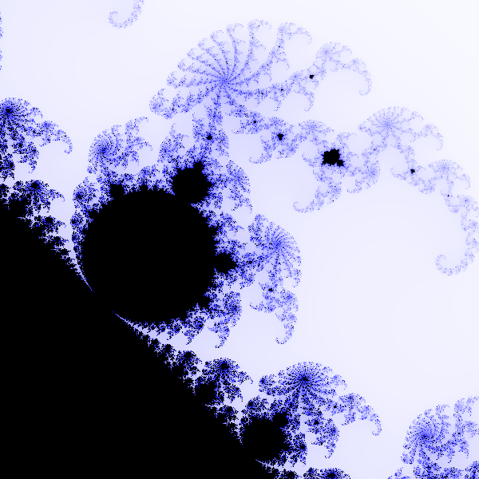
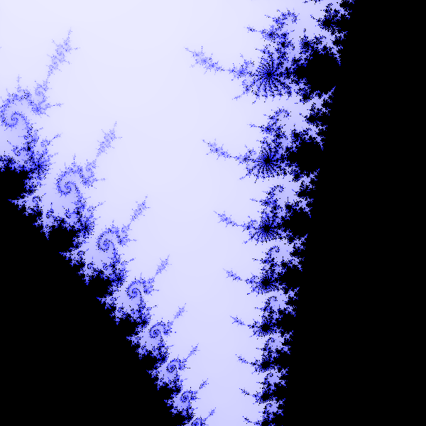
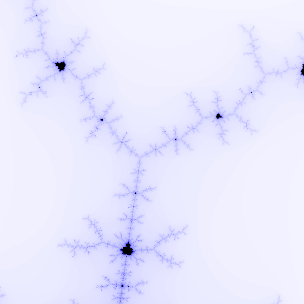

This will be a series of posts to explain, in as much detail as I can, the development of Refractal, an (admittedly weakly named) web-based 2D GPU fractal renderer I have been working at on-and-off since early 2023. I have put a lot of effort into adding as many features to this as possible so my motivation to write will likely run out much before the list of things I can talk about.
In my CS degree I took a course on computer graphics which, like many things about the degree, contained material that could have been entirely learned on the internet without spending any money. One thing we worked with in the course that did interest me though and I really appreciate being introducted to was WebGL. WebGL is an API for web applications to interact with the GPU and render graphics to a canvas to be displayed in-browser. In the course it was used to model the graphics pipeline used for 3D applications and games. This was cool to see, and although I knew a fair amount about it beforehand, I saw my own use for the GPU's raw power: fractals.
I had written a fair-share of Mandelbrot fractal renderers in the past of highly varying quality. It was like a "Hello World!" program for me in any language that had graphics capabilities. I had used Python, Processing, TI-Basic in my high school math classes, Rust, etc. I even hand-drew an image of it on graph paper in grade 12 using another TI-Basic program which outputted the strength at which I should fill in the cell with my pencil. I displayed it proudly in the little plastic sleeve on the front of my math textbook. I failed to find it after a brief search at the time of writing, but if it does come up, I will put a picture of it here.
Writing a Mandelbrot fractal renderer is fairly simple. Here is some basic pseudocode for a static renderer:
for each x from 0 to WIDTH
for each y from 0 to HEIGHT
// can account for pan/zoom here
c <- (4 * x / WIDTH) - 2 +
((4 * y / HEIGHT) - 2)i
z <- 0
for iteration from 0 to MAX_ITERATIONS
z <- z2 + c
if |z| > 2
break and set escaped flag
if loop was escaped
set pixel (x,y) white (or gradient based on iteration count)
else
set pixel (x,y) to black
We take our canvas in whatever graphics framework and, iterating over every pixel on the screen, we calculate a complex-valued coordinate. For a standard view, use [-2, 2] on the horizontal axis and [-2i, 2i] on the vertical axis on a square canvas. Familiarity with complex numbers initially is fairly optional to start as we can just copy the formulas and not worry about the underlying math. Now that we have our point, called c, we create another value z which is initially 0 in both real and imaginary components. Then we iterate up to some maximum number of iterations (30-50 is good for an unzoomed image) and perform the update z ← z2 + c. Often times we do not have access to a built-in complex number type so we represent the complex number using two separate floating-point numbers, being its real and imaginary parts. In that case the update in code is1:
zr ← zr * zr - zi * zi + cr zi ← 2 * zr * zi + ciNow these updates of course must be done at the same time with the second not using the first's changed value. Doing this is the oldest blunder in fractal generation, leading to Tippett's fractal when everything is done:
This can be easily remedied by using a temp variable and once that is avoided (since we want to see the image where this all started from) we need to add our escape condition. These kinds of fractals are called escape-time fractals because we colour them based on the time taken for the iterated value to escape some threshold. The standard way to do this is to check if the absolute value (magnitude) of z becomes greater than 2. For math reasons I will get into in a later post, in this render of a Mandelbrot fractal this is a perfect line to set, but for other fractals and situations it may not be. Once we cross this line for the pixel we are looking at, we take note of the number of iterations and colour the set accordingly. For my demo images I am using ITERATIONS_TAKEN / MAX_ITERATIONS (guaranteed to be in [0, 1]) to interpolate between white and blue with black being used for points that never escape. Once we have that all set up we get one of the most famous images in all of mathematics:

What an interesting and complex image, and it only takes under 100 lines of your chosen programming language to create. Now hooking up some controls to zoom and pan around the image, we can explore this fascinating fractal in much more detail. I think getting decent controls is important when working with these fractals a lot as manually entering zoom levels or using sliders is a bit cumbersome. I use WASD to pan with the + and - keys bound to zooming which fit me well as someone very accustomed to gaming on a keyboard and I have gotten quite comfortable and adept at using them to move around a fractal image. Maybe they aren't the greatest objectively (I am not a skilled UX designer) but it works fine for me and I am the main consumer of this program.
Why running this on the GPU is so nice for this should be fairly obvious if you're familiar with how a GPU works. It excels at high-volume repetitive calculations, being able to do massive amounts of parallel computation. This means large amounts of pixels will be computed at the same time instead of one-by-one using a normal CPU-bound programming language (multithreading can help but still cannot compete in raw computation power). The downside to using the GPU is the sheer amount of boilerplate code and work needed to get everyting set up to talk to get the GPU to do what we want. Luckily WebGL and the browser will handle most of that for us and the setup is quite simple and automatically works on basically any operating system or architecture that can run a modern web browser. The setup required is to create an HTML canvas and get a special WebGL context for it which we supply with all the necessary data. At bare minimum it needs a vertex buffer, and both vertex and fragment shaders. The vertex buffer in this case is quite simple, we are not doing any complicated rendering of tons of triangles, we can just place two triangles directly in front of the camera covering exactly the entire screen which gives us a fresh canvas to draw our fractals onto. In Refractal, this is just:
const vertices = new Float32Array([
-1.0, 1.0,
-1.0, -1.0,
1.0, 1.0,
1.0, -1.0
]);
The vertex shader, which gets run once for each vertex we passed in, is similarly simple. We don't have any kind of 3D camera or any texture coordinates to calculate, we just pass the information forward to where the real work is being done, the fragment shader. The fragment shader gets run for every pixel we want to draw on the screen which in our case just means every pixel on the screen runs this program once to decide which colour it should be which is quite convenient. Now all we need to do is write the described escape algorithm in GLSL, the shader language used in WebGL. GLSL is effectively a slightly different subset of C which makes it quite easy to pick up but has some rough edges and extra things we're not allowed to do since the code needs to run on a GPU.
Attempting to zoom in on the fractal to see those beautiful sights we see in all those deep fractal zoom videos we run into a bit of an obstacle.
What happened? Where is all the detail? Well, the problem is (as you might be able to guess) the iteration count. This image was taken with only 40 iterations, but if we raise that number to 400:

Now we're talking. I recommend creating a widget or assigning certain keys to raise the iteration count when needed. Now of course we are paying for this extra quality with speed. Rendering this image at 600x600 with 400 iterations shouldn't take too long on any modern computer but as we add in more effects or attempt to zoom in even further then we might start to run into some serious performance issues. My Radeon RX 6750 XT for example eats this up all the way up to around 100000 iterations at the same resolution before any noticeable stutter.
One last issue I want to talk about with this renderer is precision. WebGL can only differentiate numbers up to a certain precision. Attempting to zoom past this will lead to the image being pixelated and ugly.
The pixels seem a bit wide because this screenshot was actually taken around -1.77892 + 0.00120205i and due to how floating-point numbers work that means the x coordinate has less precision than the y coordinate. If you are familiar with how floating-point numbers are distributed this should make sense. Truly remedying this issue is not trivial or cheap as raising the default precision of the float type used only goes so far. I will talk about other methods to zoom deeper in a later post.
Even with this simple setup we can create some nice images. Spending some time every once and a while playfully exploring and admiring the beauty of fractals helps as a refreshing break from and motivates future work on one's own renderer.
  This concludes the first part of this series which lays much of the necessary groundwork for further work in this fascinating world of escape-time fractal rendering.
1 Taking the square by hand instead of using a function like pow is more perfomant, although your compiler might make this optimization for you anyways.